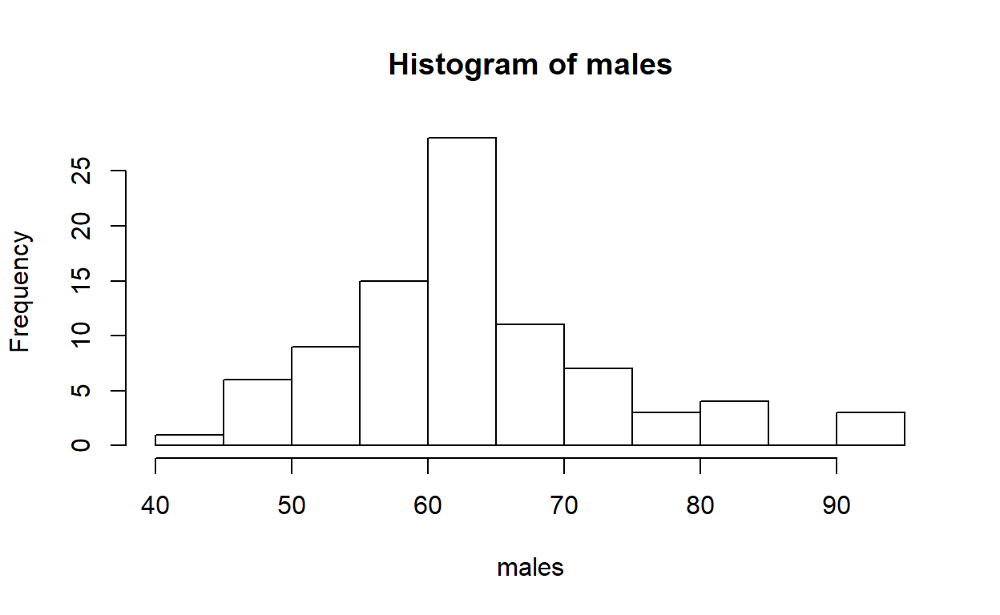
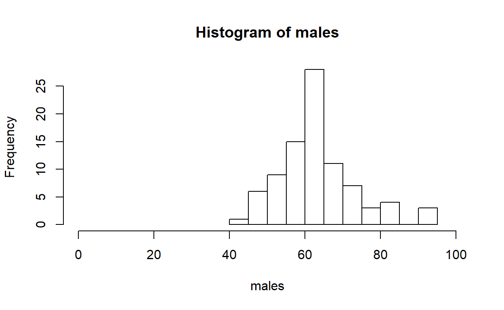
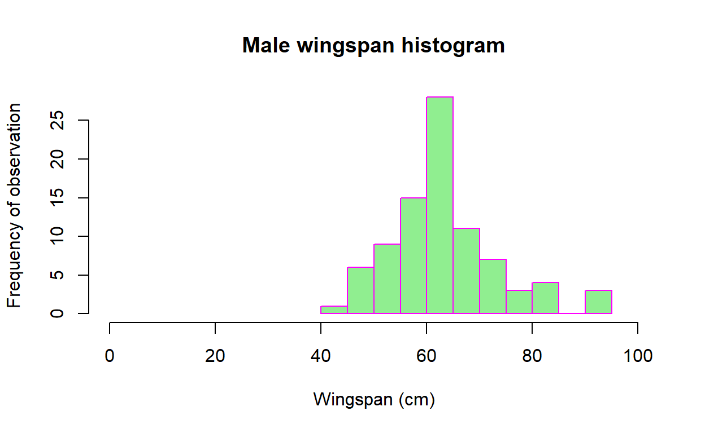
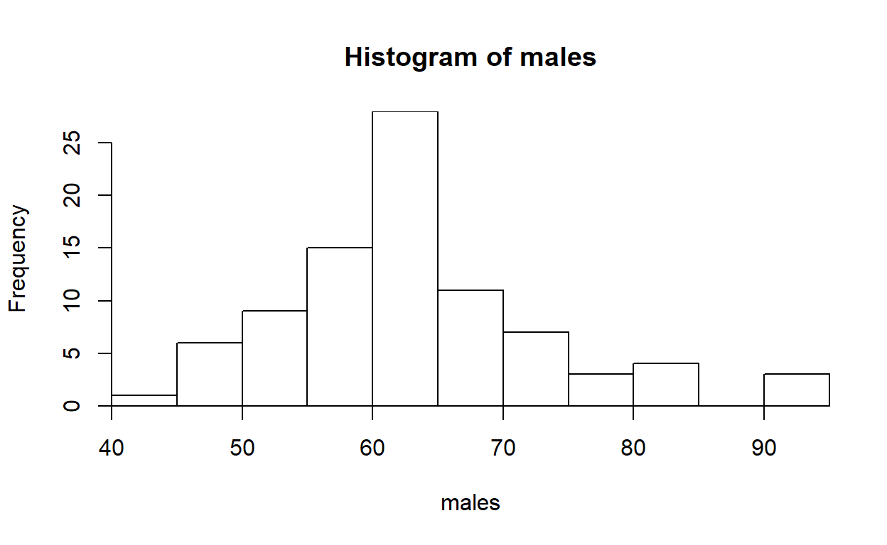

THE REDLINE INDEX AND R COMMANDS
1. Calculate the Red Line Index valueExercise
The data file Bird Red Line Index contains information on the Status of 110 Bird Species.
The data file Bird Red Line Index contains information on the Status of 110 Bird Species.
Background The Redline Index is a measure that can be used to monitor the status of bird populations. The formula for calculating the redline index can be understood as follows. Birds are first classified into the following categories: Least Concern, Near Threatened, Vulnerable, Endangered, Critically Endangered, or Extinct. The number of birds in each category is then multiplied by a weight to derive a score for each category. These values are then added together. The weights are: 0 for least concern, 1 for near threatened, 2 for vulnerable, 3 for endangered, 4 for critically endangered, 5 for extinct.
If there were 100 birds and they were all extinct, using the formula described above, the total score would come to: \[\small (0 \times 0) + (1 \times 0) + (2 \times 0) + (3 \times 0) + (4 \times 0) + (5 \times 100) = 500.\]
If there were 100 birds and they were all in the Least Concern category the formula would give a score of \[\small (0 \times 100) + (1 \times 0) + (2 \times 0) + (3 \times 0) + (4 \times 0) + (5 \times 0) = 0.\] If the Actual score obtained from the data is denoted A and the score when all birds are extinct is M, the formula for calculating the Red line Index can be written as (M-A)/M. For example, if the data sample consisted of 60 birds species spread equally across each category the Red Line Index would be: \[\small
\begin{eqnarray}
A &=& (0 \times 10) \times (1 ? 10) \times (2 ? 10) \times (3 ? 10) \times (4 ? 10) \times (5 ? 10)\\
&=& 150\\
M &=& (5 \times 60)\\
&=& 300\\
(M-A)/M &=& (300-150)/300\\
&=& 150/300\\
&=& 0.5
\end{eqnarray}
\]
2. Follow the below link and complete the first two chapters of the code school introduction to R
The relevant chapters are: \begin{enumerate{ R Syntax: A gentle introduction to R expressions, variables, and functions Vectors: Grouping values into vectors, then doing arithmetic and graphs with them \end{enumerate} each chapter is locked. This means that to get to the next chapter you need to complete all the material in the previous chapter. There is no need to sign up to ‘code school’, you can just complete the exercises during the lab. If you want to complete the exercises in your own time in advance of your computer lab class the only way to establish a record that demonstrates you have completed the material (chapter badges) is to sign up for a free account. Once you have a free account you should be able to start the exercises from where you finished your last session, so it should show the chapter badges you have collected. However, for this week I strongly advise you to complete the exercises during the computer lab session.
Once you have finished the code school exercises make sure you get a tutor to check your work before moving on to the worked R script example. If you have trouble with R please ask a tutor for help.
3. Start R studio and work through the Lab 2 Exercise 1 script on creating a histogram. Remember to start by saving the relevant data file and script file somewhere.
- If you have not done so already, watch the getting started recording before attempting to run the below script.*
Exercise 1. Create a histogram
Although it is straight forward to create a bar chart or pie chart in Excel, it is much harder to create a histogram or boxplot in Excel.
Histograms and Boxplots are key plots in science. This is one reasons for introducing to R Studio.
Typing data directly into R can be time consuming. For this exercise we will read in the data from an Excel file.
The specific format of the file we will use is an Excel .csv extension file. This approach will save us a lot of time.
To do this you need to:
If you don’t know how to do this consult the recording on the LMS or ask a lab demonstrator.
The below line only works if the file “wingspanMALES.csv” has been saved into your working directory.
The file contains measurements on the wing span of different birds. All the birds are Male. In R Studio summary details of the data set will appear in the data window.
We now have an ‘object’ called WingSpan that we can work with.
To look at the structure of the data we have read into R
## 'data.frame': 87 obs. of 2 variables:
## $ X : int 1 2 3 4 5 6 7 8 9 10 ...
## $ males: num 54.8 63.1 63.4 68.9 62.1 ...If you look at the information in the console window you will see that we have a ‘dataframe’; there are 87 observations; and the values are numbers.
We can look at the first few observations in the data usingIf we type the dataframe name we will see all the observations
When we have a sample set of observations such as we have here we want some way to look at the distribution of the data.
At the moment we have a dataframe called WingSpan and a column of data within the dataframe called ‘males’.
Our instructions need to tell R: (i) which data.frame to grab – we want the ‘WingSpan’ data.frame;
(ii) the data column within the data.frame to look at – we want the ‘males’ column; and (iii) the ‘function’ to apply – we want the histogram function which we call with ‘hist’ We get a basic histogram using the following commands:  We can then set the x-axis range with the xlim() parameter

We can start to make edits to the plot:
If you feel lost, please consult the R guide for histograms. The guide provides lots of information. Look at each line of code to make sure you understand what is going on.

Reinforcement activity
Change the example below as follows:
Getting images from R to word documents
Use the export tab, and the copy to clipboard option to experiment with changing your plot size.
Finally, see if you can copy and paste the histogram to a word document.
It is important that you can get the histogram from R into a word document, so please ask for help if you are struggling with this.
You also need to have the figure formatted in the SCIE1104 style guide format for figures. see the handout on the LMS for this. It is the format you will need for assignments.
Technical note on the default axis format for histograms. It is possible to override the default axis setting for histograms as shown below.
 Sometimes this can be misleading. For example, in this case the first bin is at 40, not zero, and so it is possible to think the distribution is closer to zero than it really is. For SCIE1104, to save confusion, we will always use the default setting. ——End of technical note on the default axis format for histograms.
Complete the following activity if you have time
If you have time read in the ‘wingspanFEMALES.csv’ data file and create a basic histogram
To read in the data, provided you have saved the file in your working directory you will need to use a command like:
## females
## Min. :45.07
## 1st Qu.:53.56
## Median :57.02
## Mean :59.27
## 3rd Qu.:62.55
## Max. :91.10Now, adapt the male wingspan example script to create a histogram for female wingspans.
########################################################################
# #
# ... you have made it through quite a bit of stuff, well done #
# #
# #
# (\ .-. .-. /_") (\ .-. .-. /_") #
# \\_//^\\_//^\\_// \\_//^\\_//^\\_// #
# `"` `"` `"` `"` `"` `"` #
# .... we'll pick up here next week :) #
# #
########################################################################